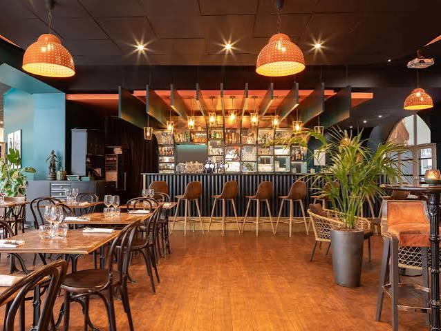
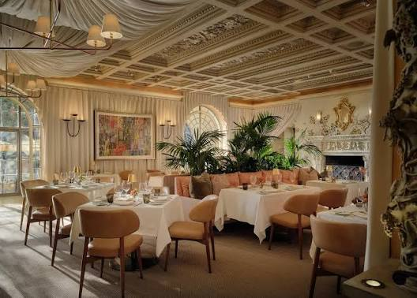
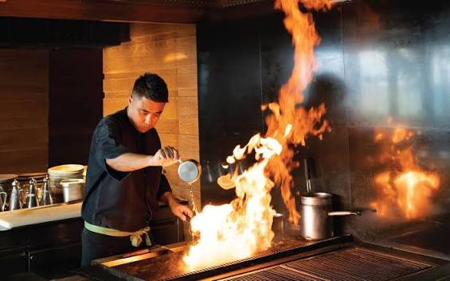

About Us
At Little Lemon, we celebrate the vibrant flavors of the Mediterranean. Inspired by Italian, Greek, and Turkish traditions, our chefs craft each dish with fresh ingredients, authentic recipes, and a passion for taste. Whether you’re joining us for a casual meal or a special occasion, we’re here to make every dining experience warm, memorable, and full of flavor.


Fine Dining at Little Lemon
Step into a world of elegance and flavor. At Little Lemon, our fine dining experience blends Mediterranean sophistication with modern charm. From handcrafted Italian pastas to exquisite Greek mezze and aromatic Turkish specialties, every dish is prepared with artistry and care. Enjoy a warm ambiance, attentive service, and a culinary journey designed to delight your senses
Our Chefs
At Little Lemon, our talented chefs are the heart of every dish. Trained in Mediterranean traditions, they bring passion, creativity, and expertise to the kitchen. From delicate Italian pastas to bold Greek flavors and aromatic Turkish specialties, each plate reflects their dedication to authentic taste and fine craftsmanship.
